Lists
Variables can hold entire lists of data. Lists are essential when your scripts increase in complexity: they are a way to group bits and pieces of information that belong together, for example: all the words to draw on screen, all the possible colors from which the script can choose, all the fonts from which the script can choose.
A list in NodeBox is no different from a list in real life: it can hold a summary of stuff to do, groceries to buy, a sheet of names and adressess. The main difference is that in real life, we usually start counting from one, while lists in programming start from zero.
The first element in a list has index zero, the second element in a list has index one.
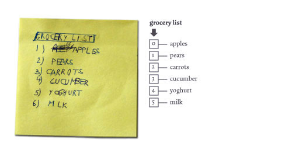
Creating a list
So, what does the code look like? Below is the grocery list defined in NodeBox. The list is defined between square brackets. Each item in the list is a piece of text (a string), therefore they are embedded in quotes. The list is assigned to a variable named groceries, but we know that variables can have any name we like, so it could be named g or stufftodo as well for that matter.
groceries = ["apples", "pears", "carrots", "cucumber", "yoghurt", "milk"] print len(groceries) >>> 6
A list can contain any kind of data: strings, numbers, and even lists.
The len(list) command returns the number of items in a list.
Retrieving and editing items in a list
You can reference items in a list directly, by adding the index of the item you want to the variable name, between square brackets:
print groceries[0] >>> apples
groceries[3] = "banana" print groceries >>> ["apples", "pears", "carrots", "banana", "yoghurt", "milk"]
Don't forget: items in a list start with index zero. That's why in the above example the fourth element is replaced. The fourth element has index 3.
Adding items to the list
Data in a list can change over the course of time. New items can be added to it, or old items deleted from it, just like you can add stuff to buy to a grocery sticky-note, or scratch out things.
| 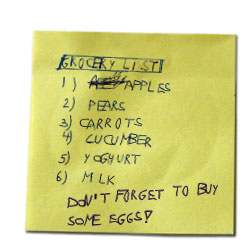 | To append an item to the end of the list: groceries.append("eggs") print groceries >>> ["apples", "pears", >>> "carrots", "banana", >>> "yoghurt", "milk", >>> "eggs"]To remove the eggs from the list: del groceries[6] |
Items can be inserted halfway the list with the list.insert(i, item) command, where the i parameter is the position where you want the element to be.
Looping through the list
Looping through a list is the same as going to the mall and working off your grocery list top to bottom: the first item to collect are apples, once you have those, you need to fetch pears, and so on.
Going through all the items in a list is one of the most essential things you do when working with data. You could retrieve the items in a list manually when there are only a few of them, but not when the list contains hundreds or even thousands of, for example, strings of text that you want to draw to the screen.
| 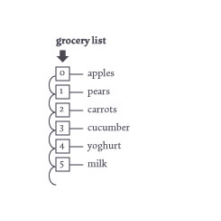 | Using the for-loop: for item in groceries: print "buy some " + item >>> buy some apples >>> buy some pears >>> buy some carrots >>> buy some banana >>> buy some yoghurt >>> buy some milk >>> buy some eggs |
In the above example, the indented command(s) below the for command are executed for each item in the list. The item variable consecutively contains each item in the list. After that, the loop ends.
Random items from the list
You can let the code decide on its own which items to draw from the list by using the choice() command.
Example
This is a very braindead example of how you would use small lists to generate compositions. The script has a list of words it can use, and a list of colors it can use. After that, the script is free to act on its own: it takes random words and colors from the two lists and draws them to the screen in random sizes and rotations. It retains a certain coherence between different runs because of its limited words and colors.
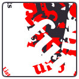 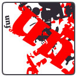 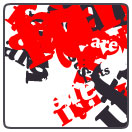 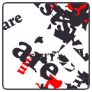 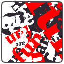 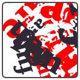 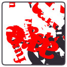 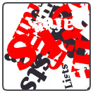
The code:
words = ["Lists", "are", "fun"] colors = [color(1,0,0), color(1,1,1), color(0,0,0)] for i in range(40): x = random(WIDTH) y = random(HEIGHT) rotate(random(360)) fontsize(random(10,100)) fill(choice(colors)) text(choice(words), x, y)
Dictionaries
Dictionaries are extremely useful kinds of lists that have string indices, keys, that you define yourself. Each key is unique and references an item in the list. Dictionaries are created with curly braces instead of square brackets.
heading = {} heading["font"] = "ConduitITC-Medium" heading["size"] = 18 heading["fill"] = color(1,0,0) print heading.keys() >>> ["font", "fill", "size"] print heading["size"] >>> 18 if heading.has_key("fill"): print "found!" >>> found!
More on lists
There is a lot more stuff you can do with lists, like sorting and reversing, or writing filter functions for lists. The full documentation is here, in the Python documentation.